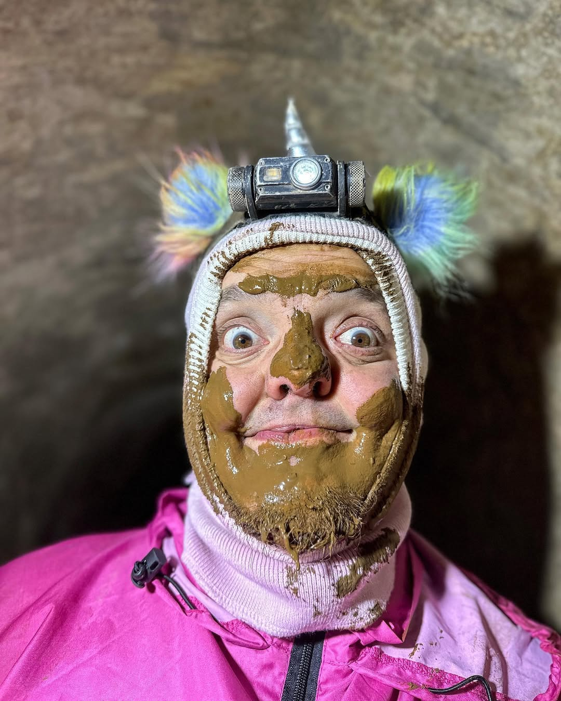
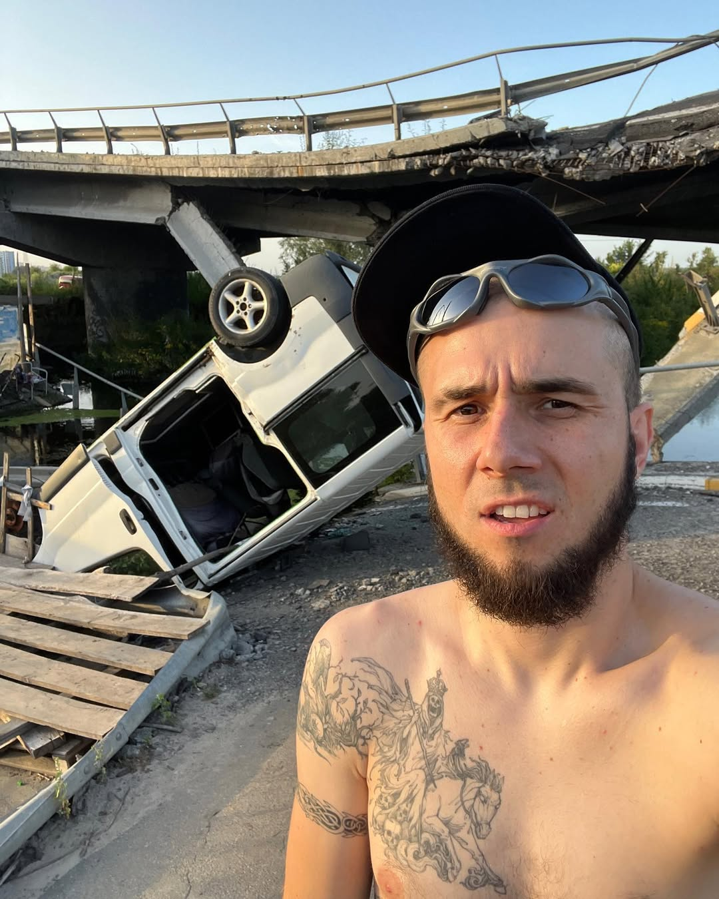
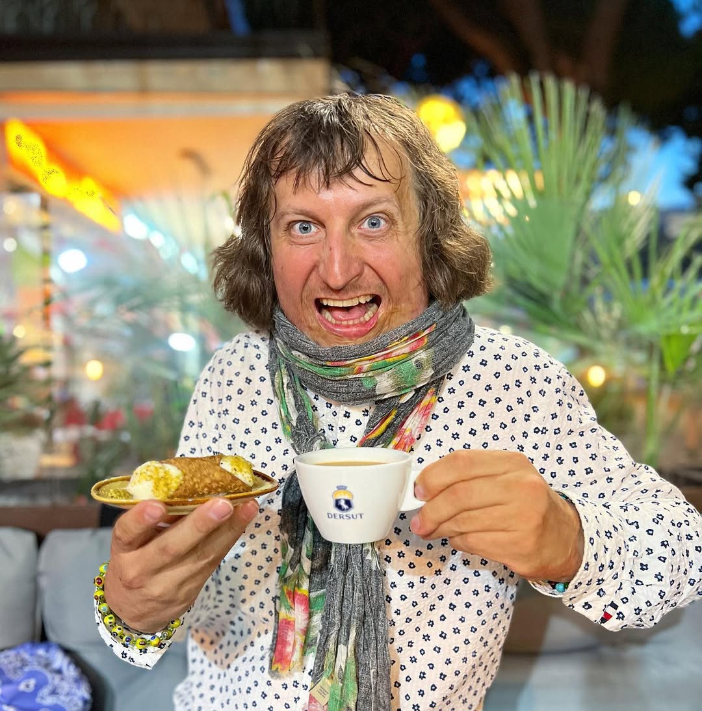
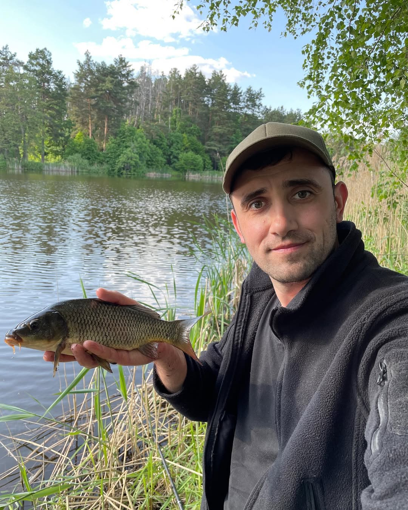

Team
Super Sus (Vitaliy Lushkov)
Founder of Super Sus Tours | Blogger

- Explorer, blogger, and a true internet legend
- Over 1 million subscribers on YouTube
- Leads extreme underground and Chernobyl zone tours
- Known for eccentric style, funny smile
- Urban explorer, thrill-seeker, and master of abandoned places
"Don't fear the darkness - become friends with it."
GROMOV (Dmitriy)
CO-Founder of Super Sus Tours

- Urban explorer and adventure enthusiast
- Featured in numerous exploration videos alongside Super Sus as his operator
- Expert in navigating and documenting abandoned places
- Passionate about uncovering hidden histories and off-the-beaten-path locations
"Every place has a story waiting to be told."
Komrad (Samkov Oleksii)
Tour guide | Blogger

- Featured in numerous exploration videos alongside Super Sus
- Expert in navigating and uncovering hidden underground tunnels
- Passionate about urban exploration and documenting forgotten places
- Dedicated to providing thrilling and informative experiences for adventure seekers
"Every hidden path has its own story waiting to be discovered.
Vitalik Ignatyuk
Tour guide | Blogger

- Popular Ukrainian YouTube blogger with nearly 3 million subscribers
- Expert in survival, travel, and fishing content
- Builder of homes in the Carpathian Mountains, blending nature and entrepreneurship
- Enthusiast of underwater hunting and outdoor cooking
"Nature is not just a backdrop for adventure—it's where every story begins."